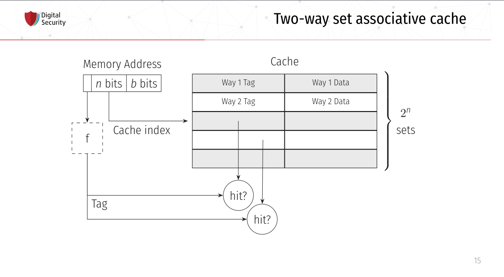

How to survive^W live with Linux
Abc Xyz
How to survive live with Linux
↑Title for Windows users↑
Table of Contents
1 Introduction
1.1 Motivation
- Many questions about tools/tips/scripting/etc in Linux
- Many mentions about my life with Linux
- You should know, what you are losing (Linux vs Windows)
- Sharing experience and knowledge
1.2 Background
First time in 2006 (Windows Vista vs Mandriva: какую ОС выбрать в 2007 году?)
- Mandriva
- Ubuntu
- Runtu
- Fedora
- Debian
- Slackware
- SUSE
- MeeGo
- NixOS
- GuixSD
- Xubuntu
- CentOS
- Calculate
- Gentoo
- BolgenOS
- OpenWRT
- webOS
- ChromiumOS
- AstraLinux
- AltLinux
- Mageia
- Moblin
- Linux Mint
- Kubunutu
- Knoppix
- Damn Vulnerable Linux
- Backtrack
- Mythbuntu
- SteamOS
- Mandrake
- many others
Arch Linux since 2013

Open source community member (maintainer, developer)
1.3 Disclaimer
I'm the software evangelist I use


Not only Linux, but Open Source
2 Principles
2.1 KISS
keep it simple stupid
2.2 TUI
Text-based user interface
2.3 CLI
Command-line interface
3 OS
*It's my opinion, for my workflow
3.1 ArchLinux
- KISS (no bloatware and unnecessary services)
- Stability & Reliability (rolling release)
- Arch Wiki
pacman- Arch User Repository
- Perfect learning base
- Arch Linux Community (no companies, no corporate ties)
- Flexibility & Customization
3.2 Why not others?
3.2.1 Ubuntu, Fedora, Mint, Manjaro, etc
Because these are very fat OSs:
- a lot of unused software
- many configuration files
- a lot of strange behavior
But for some reason these distributions are very useful
3.2.2 Gentoo, LFS
Fuss too much with them
3.2.3 NixOS, GuixSD
NixOS:
- DSL
- some
myissues - FHS (Filesystem Hierarchy Standard)
GuixSD:
- very unstable
- libre OS
4 Software
Mostly CLI and TUI
4.1 Internet
4.1.1 Network managers
- NetworkManager (
nmcli,nmtui) - systemd-networkd
- iwd
4.1.2 Tor and proxies
- SOCKS
tsocks,proxychains-ng- environment variables
- HTTP
httptunnelproxytunnelcorkscrew
torify(applications w/o proxy settings)
4.1.3 Web browsers
- w3m
- elinks
Firefox + extensions
Other VIM-based browsers are unstable and have less features (based on WebKit, didn't have Rust Quantum engine):
- luakit
- surf
- qutebrowser
VIM plugins:
- Pendactyl (only Extended Support Release)
- Tridactyl
- Vimium
- Vimium C (current)
Hint mode
Console mode (Tridactyl)
4.1.4 youtube-dl
youtube-dl usage
Extractors list
tridactyl / etc + youtube-dl + mpv / mpd
=
video/audio ninja (you is godlike with i3)
Restrictions, advertising? What are you talking about?
4.1.5 curl — httpie
- simple using
- nice format output
- JSON parsing (
curl+jq) - etc
Example of default output

4.1.6 wget — aria2
- Faster (segmented downloading)
- BitTorrent extensions (DHT, PEX, Multi-Tracker, UDP tracker, local peer discovery, etc)
- More protocols (FTP, Metalink, etc)
4.1.7 Torrents
Transmission
- Client-server architecture
- Mobile client
- CLI client for scripts + TUI client —
tremc
Torrent info
peerflix WebTorrent
- Streaming torrent client
- Modules
- Media futures
- node.js & browser
needed Rust/wasm version
4.1.8 Mail — (neo)mutt + OfflineIMAP + getmail + msmtp + etc
- Customization
- Key bindings
- Custom mail headers
- Favorite editors
- View, colors, sidebars
- Modules
- Address books
- IMAP, POP3, SMTP clients
- Password managers
- Everywhere in sh/bash
- GPG
- CLI
- No JS, HTML
4.1.9 Messengers
BitlBee - IRC gateway
- XMPP
- Hipchat
- Hangouts
- Skype
- Telegram
- VK
- Matrix
- Discord
- Steam
- Mastodon
- Slack
- ICQ
- etc
BitlBee interface
WeeChat - IRC
MCabber, profanity — XMPP
- PGP
- OTR
- Plugins/Modules
- Multi-User chat
- Command completion
profanity Pip-Boy
toxic — Tox
- P2P
- For secure conversation
tg-cli — Telegram, but telegram-desktop too
4.1.10 RSS, news
newsboat
As mutt, but for RSS
Telegram
Channels with bots, which sends RSS (Reddit, Twitter, HackerNews, Lobste.rs, etc) to channels.
4.1.11 Remote desktop
Easy tasks
ssh with X forwarding (use settings for compressing and encrypting traffic for speedup)
- Hard tasks
- VNC
- qemu with SPICE + VNC
4.2 Multimedia
4.2.1 Image viewers
Framebuffer (energy saving)
fbifbv
Don't forget configure tty!
Simple
- feh
- CLI and hotkey powerful
- Very simple (so no screenshots)
- sxiv (more GUIably, than feh)
- vimiv (VIM image viewer)
4.2.2 ImageMagick
Very powerful image processing tool!
Throw out your GIMP. A joke of course. Throw out your Photoshop.
4.2.3 Music
mpd
- Server with clients:
- mobile
- GUI
- TUI
- CLI
- mpdscribble (Last.fm)
ncmpcpp (mpd client)
4.2.4 Video
Players
- mpv — most powerful video/audio player
- cvlc — CLI version of VLC
FFmpeg
Converting, hardware rendering, screencasting, input/output many formats (camera, screens, devices).
4.2.5 Metadata
Many interesting things you can know from metadata of video, images and data.
- ExifTool (audio, video, images, documents, etc)
- exiv2 (images)
4.3 Utilities
4.3.1 Terminal emulators
urxvt (rxvt-unicode)
- Old
- Universal
- Many patches and plugins developed in Perl
- Configurations in Xresources
Alacritty
- GPU rendering
- Rust
- Many features
Kitty
- GPU rendering
- Python
- More features (Unicode glyphs, many nice bindings, graphics, client-server SSH, multiplexer, etc)
4.3.2 Terminal multiplexer. tmux
Also byobu as more friendly and screen as older
4.3.3 File managers
ranger
- Many features
- Python
- Slow
ranger interface
vifm
- C
- VIM
- Diffing
- Filtering
- Searching
- Batch renaming
vifm interface
4.3.4 Git
You should learn it!
I use it everywhere:
- control version
- backups
- diffing
- merging
- review
- messaging
- file system
- etc
Gitea, GitLab, GitWeb as self-hosted Git-repository managers

4.3.5 QEMU (KVM)
A free and open-source emulator and virtualizer that can perform hardware virtualization.
- User-mode and system emulation
- The emulation of various architectures and periphery
- TUI, CLI
- Integration
- Open Source
4.3.6 WINE
Wine Is Not an Emulator is a free and open-source compatibility layer that aims to allow application software and computer games developed for Microsoft Windows to run on Unix-like operating systems.
- Debugging
- Backward compatibility
- Non-x86 architectures
- RE of Windows
Other versions and uses:
- CrossOver
- Cedega/WineX
- Darwine
- Pipelight
- Proton
- ReactOS
- Odin (OS/2)
- Parallels Desktop and VirtualBox
- WineD3D
- etc
4.3.7 Backups
restic
Encrypted snapshots, many backends + systemd
4.4 Text editing
Use doc{,x}, ppt{,x}, xls{,x} and others if you really needed it.
4.4.1 VIM
- Modern text editor (tabs, windows, buffers, syntax highlighting, spell checking, folding, etc)
- Modal editor (insert and normal modes + visual and line modes)
- Comprehensive help system
- Memory footprint is very low, faster than other
- Command centric. You can perform complex text related task with few commands
- Many plug-in available
- Native scripting (vimscript) and built-ins commands
- vimdiff, rview, rvim
- Ubiquitous
4.4.2 Emacs
- Client-server (share the buffer list, kill ring, undo and other)
- Pervasive help system with keybindings, functions and commands documented on the fly
- CLI, TUI, GUI
- Extensible and customizable Lisp programming language variant (Emacs Lisp)!..
- Ability to emulate vi and vim (using Evil, Viper or Vimpulse)
- A powerful and extensible file manager (dired), integrated debugger, and a large set of development and other tools
- Having every command be an Emacs Lisp function enables commands to DWIM (Do
What I Mean). For example, a
switch-or-split-window
"An OS inside an OS"

Rust ♥️ Emacs = remacs
4.4.3 Spacemacs & Doom
My choice:


4.4.4 Org-mode
Your Life in Plain Text
- Keeping notes
- Maintaining TODO lists
- Planning projects
- Authoring documents (à la Jupyter notebook, tablesheet, exporting to another formats)
This presentation created in org-mode and exported to HTML + reveal.js
Planning
Clocking
Agendas
Capturing
Tables
Exporting
Working with source code
4.4.5 LaTeX
\mode<presentation> { \usetheme{dsec} \dsecset{progressbar = frametitle} \dsecset{subsectionpage = progressbar} } \title{Introduction to software-based microarchitectural side-channel attacks} \subtitle{} \author{Abc Xyz\\ @dura\_lex} \titlegraphic{\includegraphics[height = 0.9cm]{logo.pdf}} \date{} \subject{Information security}

- Typesetting journal articles, technical reports, books, and slide presentations
- Control over large documents containing sectioning, cross-references, tables and figures
- Typesetting of complex mathematical formulas
- Advanced typesetting of mathematics with AMS-LaTeX
- Automatic generation of bibliographies and indexes
- Multi-lingual typesetting
- Inclusion of artwork, and process or spot colour
4.4.6 Zathura
Simple PDF reader
- VIM bindings
- Automatic reloading document
- Synctex
- Recoloring, reformatting
- CLI
4.4.7 Markdown
Use for work
4.4.8 AsciiDoc
Use for real work
- Including files
- Normal lists with complex content
- Anchors
- Formatted images
- Powerful code blocks
- Comments
- Tables for the people
- ToC
- Bibliography
- etc
4.4.9 Pandoc
Markup converter
- Markdown
- reStructuredText
- AsciiDoc
- Org-Mode
- Textile
- HTML
- CSV
- EPUB
- roff
- LaTeX
- DocBook
- OPML
- InDesign
- Wiki
- reveal.js
- Microsoft Word
- OpenOffice/LibreOffice
- etc
4.4.10 Spell checkers
Aspell, Hunspell + LanguageTool for grammars
Use my personal dict everywhere (editors, browser, shell, edit fields)
4.4.11 Tesseract OCR
- CLI
- API
- Multilanguages
4.5 Core utilities
- Standard utilities are old and have few features, but stable
- The list below is alternatives, not replace
- For scripts you should use first order applications for compatibility
- It's normal, that more than half applications were developed in Rust language (r)
4.5.1 Bash — Zsh
- Featured aliases (suffix and global)
- Easy directory navigation
- Advanced completion
- Globbing
- Command line editing
- Spelling correction
- Themes and plugins (Oh My Zsh, Prezto, Powerlevel9k, etc)
- etc
Zsh features
4.5.2 ls — lsd (r)
Colorized and with icons ls
4.5.3 tree (ls) — exa (r)
More features and faster
4.5.4 cat + less, more — bat (r)
- Automatic paging
- Customization
- More features…
Syntax highlighting

Git integration

Show non-printable characters
4.5.5 cp, mv, rm — rsync
- Fast and extraordinarily versatile file copying
- Progress bar
- Delta-transfer
- Client-server architecture
- Can replace
scp - Can used as backup tool
4.5.6 du, df — ncdu
Interactive du and df
ncdu
4.5.7 tar, (un)zip — bsdtar, 7z
tar + (un)zip = bsdtar
- Automatic format detection
- Handles file flags, ACLs, arbitrary pathnames, etc
- Library.
libarchive
4.5.8 find — fd (r)
- Convenient syntax:
fd PATTERNinstead offind -iname '*PATTERN*' - Colorized terminal output (similar to ls)
- It's fast
- Smart case
- Ignores hidden directories and files,
.gitignoreby default - Fast regular expressions
- Unicode-awareness
- The command name is 50% shorter* than find
- Parallel command execution with a syntax similar to GNU Parallel
4.5.9 diff — git-diff, colordiff, delta (r)
Use git-diff colordiff delta for diffing!
- Language syntax highlighting with color themes
- Within-line highlights based on a Levenshtein edit inference algorithm
- Git style strings (foreground color, background color, font attributes) are supported for >20 stylable elements
- Side-by-side view
- Line numbering
diff-highlightanddiff-so-fancyemulation modes- Stylable box/line decorations to draw attention to commit, file and hunk header sections.
nandNkeybindings to move between files in large diffs, and between diffs inlog -pviews (--navigate)
delta with line numbers
delta with side-by-side
vimdiff (VIM), ediff (Emacs)
Powerful interactive diffing tools
3-way diff for merging
4.5.10 diffoscope
In-depth comparison of files, archives, and directories
- Compare many file formats (binary, archive)
- Fallback on hexdump comparison
- Fuzzy-matching to handle renamings
4.5.11 grep — ripgrep
- Fastest (Rust's regex engine + paralleling)
- Unicode support by default
- Powerful regexp on Rust (but PCRE2 exist)
- Support searching files compressed (bzip2, gzip, lzma, xz, etc)
- Multiline searching
- Arbitrary input preprocessing filters
4.5.12 sed, {g,n,m}awk
If you are not using it yet, then it's time
4.5.13 (u)mount — udisks2
Mounting with user's permissions
4.5.14 pass
CLI pass manager. Powered by OpenPGP
4.5.15 fzf
A command-line fuzzy finder.
Live demo
4.5.16 systemd
Not Unix way, but very useful
- Journal: system logging
- Timers: reasonable alternative to cron
- systemd-boot: UEFI boot manager
- systemd-logind: session manager
- systemd-networkd: network configuration management
- systemd-nspawn: light-weight namespace container
- systemd-resolved: network name resolution
- systemd-timesyncd: system time synchronization across the network
- systemd-tmpfiles: temporary files
- etc
4.5.17 Simple and useful tools for RE and life
man,apropos,mandb: throw out the Internet, you have manualstee: read from standard input and write to standard output and filesmktemp: create a temporary file or directorytr: translate or delete characterscut: remove sections from each line of filesod,xxd,hexdump: custom hex viewsort,uniq,comm: sort, delete duplicates, compare output
head,tailwc: count of chars, lines, bytesstringsiconv: convert text from one character encoding to anotherfile: what is it?watch: execute a program periodically, showing outputshred: burn after reading
inotifywait: wait for changes to files using inotifyls{blk,pci,cpu,usb,mod}: block, PCI, CPU, USB devices, kernel modulessudo, but notsu(sudoeditfor editing files): I'm rootpgrep,pidof: find processkill,pkill,killall: then kill itps,htop: process listsleep: Zzz…
radare2
- rabin2
- radiff2
- rafind2
- ragg2
- rahash2
- rarun2
- rasign2
- rasm2
- rax2
r2
binwalk
- Disassembly scan
- Signature scan
- Extractions
- Entropy
- Binary diffing
4.5.18 Rust section
Install rustup: https://rustup.rs
$ cargo install package_name
and you on the horse!
tokei: inspect source codejq: JSON prettifierxsv: very fast parsing of large CSV filesfselect: searching on file system with SQL queries.find+ls+awkbingrep: colorreadelf, more powerfulgrepfor ELF files
ripgrepall: find everywhere: binary files, PDFs, images, music, video, etcstringsext: Better searching Unicode strings, but performance may be bettertealdeer: tldr, documentationtopgrade: upgrade your systemchoose: a human-friendly and fast alternative to cut and (sometimes) awk
4.6 Windows managers
4.6.1 i3
- Minimalism (i3 is fast)
- Screen real estate
- Keyboard-driven workflow
- Flexibility
- Workspaces
Live demo
4.6.2 Panel
- i3bar
- i3status
- i3status-rust
- i3blocks
- polybar
- conky
- j4status
- many many others
Live demo
4.6.3 dmenu rofi
Featured dynamic menu for X.
Live demo
4.6.4 dunst
Dunst is a highly configurable and lightweight notification daemon.
Live demo
5 Life + IT Workflow
5.1 Configurations
One configuration for everything: PC, Laptop, Work, Guest/Virtual PC, Smartphone, Router, Server etc?
- A custom shell scripts?
- A bare git repo?
- An existing dotfile manager: homeshick, rcm, GNU Stow, yadm, etc?
Chezmoi — manage your dotfiles across multiple machines, securely.
- Flexible: OS (Linux, MacOS, Windows, FreeBSD, Termux), Arch, Hostname
- Personal and secure (1Password, Bitwarden, gopass, KeePassXC, LastPass, pass, Vault, CLI tool and GnuPG)
- Transparent: dry run mode, one-to-one map of files and symlinks
- Declarative (templates, metadata in names) and robust (atomic operations)
5.1.1 File system cleanliness
chezmoi unmanaged+fzfand ignored files- Scripts for checking unneeded packages, installing packages
- Encrypted sensitive information and private repositories
5.1.2 Dark and light
This eye are looking at you like a Winduzyatnik
- Auto switching temperature of display (without light detector)
- Auto switching dark/light themes (no universal solution)
5.2 VIM/Emacs everywhere
- Don't use a mouse, because it need more time, than a keyboard
- A home row of your keyboard is your friend: speedup and economy (keyboard with lights)
- Xdotool + Emacs = edit everything in Emacs
- VIM/Emacs keymaps and modes everything: browser, IDE, windows manager, multiplexer, music player, torrent manipulation programs, mail, everything… except Ghidra.
5.3 Presentations, reports, documents, messages
Only plaintext:
- diffing, manipulation with CLI tool
- using version control system
- emails without HTML and JS shits (Yandex.Mail, you place is in the hell)
- more informative, more convertible, more security
5.3.1 How I use it
I can convert org-mode (asciidoc) to everything: plaintext, static HTML, LaTeX, PDF, presentations (beamer, reveal.js). I can generate books and reports from plaintext.
I can share sources or make easy review and use parts of already wrote items.
I have many notes with ideas, presentations in structured plaintext format in version control systems.
I can sync all my documents (reports, books, presentations, ideas) between machines for working with it everywhere.
5.4 Smartphone
- AOSP or similar
- Open source utilities: F-Droid or GitHub + ADB
- Termux for PC's work: SSH, running all Linux stuff (tmux, my Rust CLI programs), using Chezmoi configurations
- Sync with other devices: passwords, web history, music playlists, etc
- VPN for working with remote (home, work, laptops, other) devices
5.5 Subway workflow
- Reading issues, mailing lists, writing answers (GitLab, GitHub apps)
- Reviewing PR/MR, fixing small bugs (IDE or VIM if exist keyboard)
- Writing notes, drafts of presentation (including this) with
orgzly(org-mode) and git for sync News from mail,RSS,RSS in Telegram, I don't read news- Reading books on jailbroken Amazon Kindle (all formats and many features)
5.6 Other devices (router, multimedia box, etc)
- All works on ArchLinux
- One configuration for everything
- Pi-hole, logger, route table, DNS server, proxy server with TLS, etc (replaced by Mikrotik)
Many firmwares are changed:
- Bookreader is jailbroken
- Printer is jailbroken
- Digital music player is jailbroken (Rockbox OS)
- Vacuum cleaner with Ubuntu but not jailbroken yet (but with Russian voice already)
- I bought a car…
5.7 Packages and open source
- Need a new software? Search in repositories and install it, that's all.
- AUR or nix have many, many packages (Repology), including for Windows OS, BlackArch have packages for penetration testers
I have custom PKGBUILDs for all patched software (also cracks^Winitial settings for proprietary software).
I'm maintainer of some packages in AUR and I regulates other packages (asks to update, to delete, to change permissions of maintaining).
5.8 Automate everything
If you do the same thing a second time, then it needs to be automated.
- Analyzing the OS (packages, configurations, status, etc)
- Smart notifications (TODO, pomodoro, honeypots, China'a attacks, etc)
- Scraping of sites (buying tickets, news, generating API)
- All around RE/pentest
- Deleting complex ads (Yandex, for example)
- Specific subjects
JavaScript, PHP, Python, Rust, Bash
5.9 Statistics about everything
- Finance budget
- Books
- Movies, serials, TV shows
- Sports activity
- Board games
- Quotes and situations from life
5.9.1 Text vs GUI
I use text files for managing it all (filtering, creating reports, sharing information between machines), all is encrypted.
6 Summary
- Just a drop in the bucket
- Technologies are evolving extremely rapidly
- Productivity = more free time
- It's only my workflow